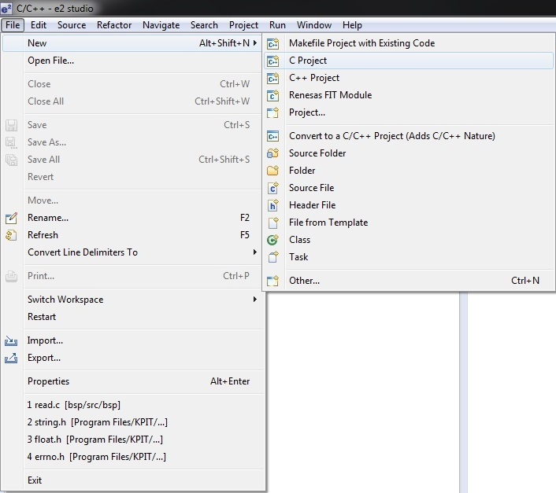
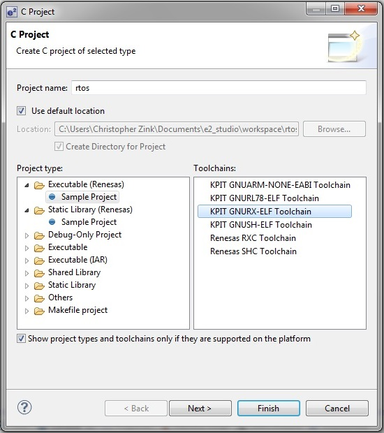
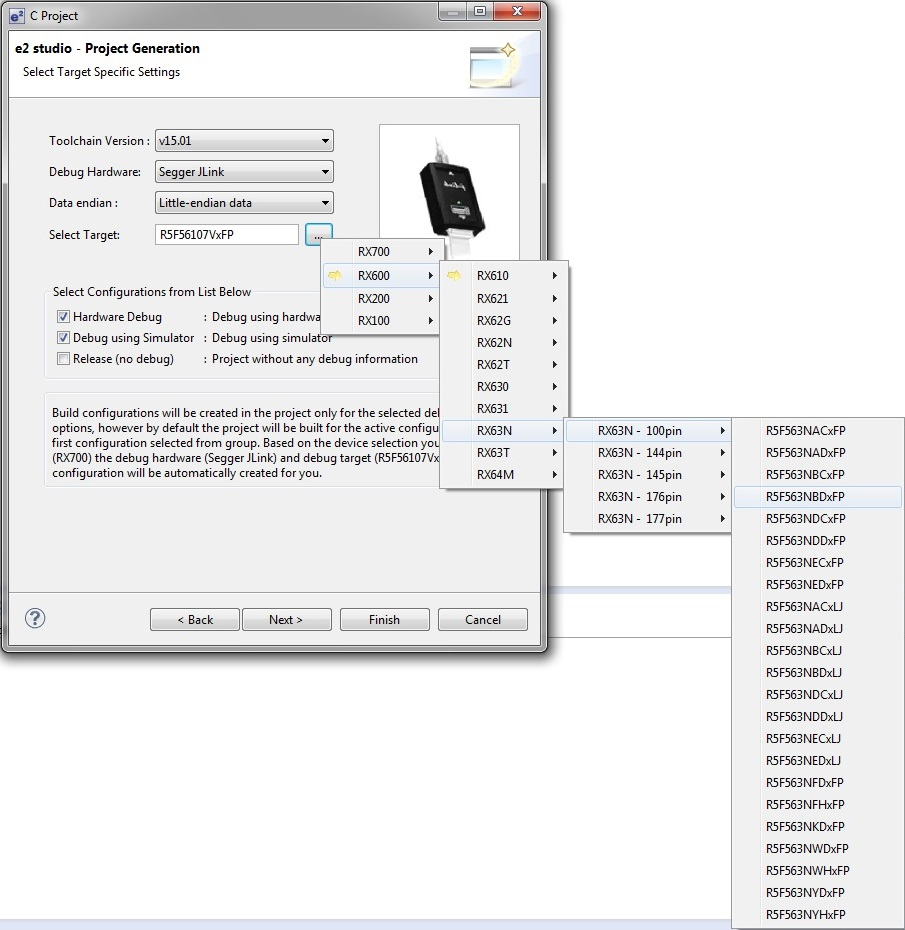
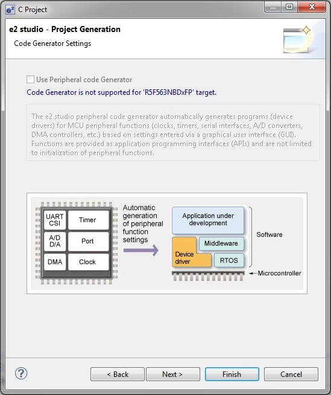
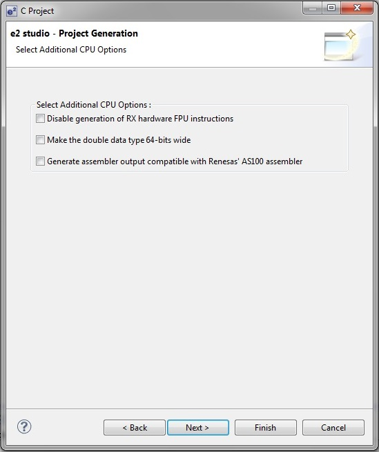
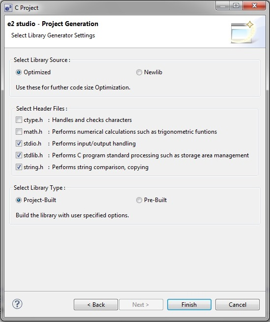
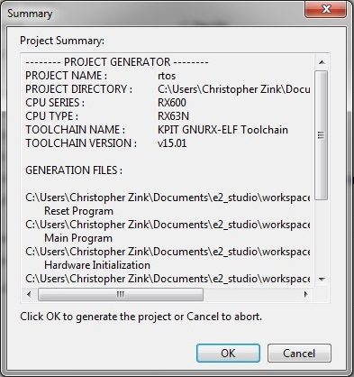
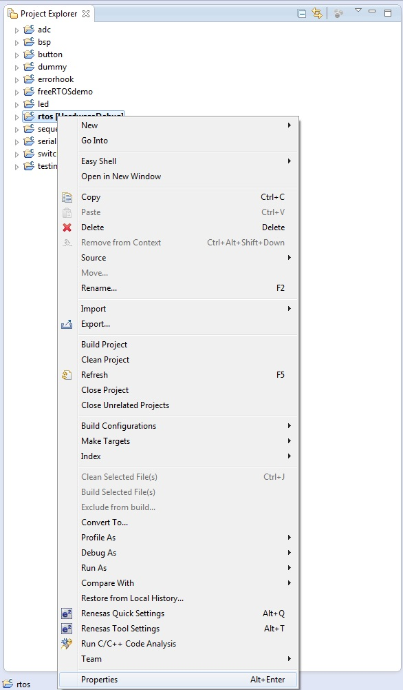

Legen Sie zunächst unter e² Studio ein neues Projekt an. Gehen Sie hierfür wie im Folgenden beschrieben vor.
Navigieren Sie mit der Maus zu File -> New -> C Projekt (siehe Abbildung 1).

Abbildung 1: Anlegen eines neuen Projektes
Geben Sie im Feld Project name den Namen des Projektes ein. Wählen Sie unter Project type den Eintrag Executable (Renesas) Sample Project und unter Toolchains den Eintrag KPIT GNURX-ELF Toolchain aus (siehe Abbildung 2). Betätigen Sie im Anschluss die Schaltfläche Next.

Abbildung 2: Projekteinstellungen
Wählen Sie nun unter Toolchain Version die auf ihrem Rechner installierte Version der KPIT GNURX Toolchain aus. Wählen Sie unter Debug Hardware den Eintrag Segger JLink und unter Data endian den Eintrag Little-endian data aus. Wählen Sie unter Select Traget den Eintrag R5F563NBDxFP (siehe Abbildung 3). Betätigen Sie abschließend die Schaltfläche Next.

Abbildung 3: Auswahl der Hardware
Im folgenden Fenster (siehe Abbildung 4) betätigen Sie einfach die Schaltfläche Next, da für den RX63NB kein Code-Generator verfügbar ist.

Abbildung 4: Code-Generator
Lassen Sie im Fenster Select Additional CPU Options alle Kontrollfelder abgewählt und betätigen Sie dann die Schaltfläche Next (siehe Abbildung 5).

Abbildung 5: Zusätzliche CPU-Optionen
Wählen Sie im Fenster Select Library Generator Settings (siehe Abbildung 6) unter Select Library Source die Einstellung Optimized. Unter Select Header Files können Sie die in ihrem Projekt benötigten Header-Dateien angeben (wählen Sie alle an). Wählen Sie als Select Library Type die Einstellung Pre-Built. Betätigen Sie zum Schluss die Schaltfläche Finish.

Abbildung 6: Bibliothekseinstellungen
Abschließend wird Ihnen eine Übersicht der gewählten Einstellungen angezeigt. Betätigen Sie in diesem Fenster die Schaltfläche OK (siehe Abbildung 7).

Abbildung 7: Zusammenfassung der Einstellungen
Sämtliche Einstellungen (und vieles mehr) können in den Projekteigenschaften nachträglich geändert werden. Zu den Projekteigenschaften gelangen Sie durch einen Rechtsklick auf den Projektordner im Projektexplorer (siehe Abbildung 8) und die Auswahl des Eintrages Projectproperties am Ende der Liste.

Abbildung 8: Die Projekteigenschaften
Kopieren Sie nun das Verzeichnis bsp in das Verzeichnis src in ihrem Projektverzeichnis. Sie haben die Möglichkeit durch Änderung der Konstanten in der Datei bsp.h das BSP ihren Anforderungen anzupassen.
Löschen Sie nun alle c- und h-Dateien im Verzeichnis src ihres Projektverzeichnisses mit Ausnahme der Datei Projektname.c. Nennen Sie die Datei Projektname.c gegebenenfalls in main.c um.
Öffnen Sie die Datei Projektname.c (oder main.c), löschen Sie deren Inhalt und kopieren Sie dann den folgenden Quelltext in die Datei.
#include <stdio.h>
int main( void )
{
puts( "Hello World!\r" );
return 0;
}
Kompilieren und Linken Sie das Projekt (Rechtsklick auf den Projektordner im Projektexplorer -> Build Project).
Navigieren Sie durch einen Rechtsklick auf den Projektordner im Projektexplorer und der Auswahl des Eintrags Debug As -> Debug Configurations zu den Einstellungen des Debuggers. Stellen Sie sicher, dass links im Fenster ihr Projekt angewählt ist. Wählen Sie rechts im Fenster, im Reiter Startup unter Runtime Options, die Einstellung set Breakpoint at main ab.
Stellen Sie die Verbindung zwischen Board und Rechner via USB her und übertragen Sie das kompilierte und gelinkte Projekt durch Betätigen der Schaltfläche Debug (der grüne Käfer) auf das Board. Sollten Sie das Projekt erstmalig übertragen, wählen Sie im Fenster Select Configuration den Eintrag Projektname HardwareDebug.
Stellen Sie erst jetzt die Verbindung zwischen dem Board und einem Terminalprogramm via RS232 her.
Betätigen Sie die Schaltfläche Resume (die Schaltfläche mit dem Startzeichen).
 1.8.10
1.8.10